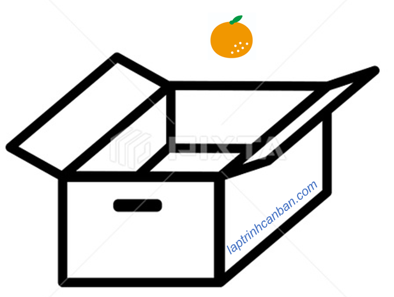
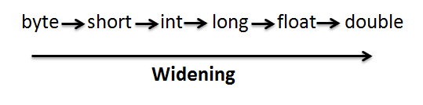
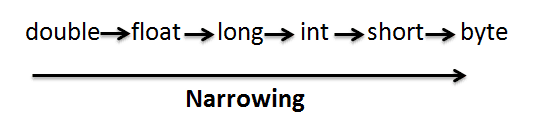

Hướng dẫn cách ép kiểu dữ liệu trong Java. Bạn sẽ học được khái niệm ép kiểu dữ liệu trong Java là gì, các toán tử ép kiểu dữ liệu, cũng như cách ép kiểu dữ liệu trong các trường hợp cụ thể sau bài học này.
Ép kiểu dữ liệu trong Java là gì
Ép kiểu dữ liệu trong Java là quá trình chuyển đổi kiểu dữ liệu trong Java, và thường được sử dụng trong trường hợp gán một giá trị vào một biến khi mà kiểu của biến và của giá trị lại hoàn toàn khác nhau.
Trong Java, về cơ bản thì kiểu của giá trị có thể gán vào một biến phải trùng với kiểu của biến đó. Tuy nhiên thì với kiểu số trong Java thì chúng ta vẫn có thể gán các giá trị có kiểu khác với kiểu của biến chứa nó.
Lại nữa thì chúng ta không phải gán trực tiếp giá trị của số cho biến, mà phải qua một bước trung gian nhằm thay đổi kiểu dữ liệu của số cho phù hợp với biến, với các quy tắc ép kiểu rõ ràng. Và các toán tử sử dụng cho việc thay đổi (ép kiểu) này được gọi là toán tử ép kiểu dữ liệu trong Java.
Quy tắc ép kiểu dữ liệu trong Java
Java là ngôn ngữ lập trình cần quyết định kiểu của một biến khi tạo ra biến đó. Bởi vậy về cơ bản thì chúng ta không thể gán một giá trị khác kiểu với kiểu của biến đó khi khai báo.
Ví dụ, nếu chúng ta gán một số kiểu int vào một biến kiểu String thì lỗi compile sẽ xảy ra:
String str; |
Tuy nhiên với kiểu số, chúng ta lại có thể gán một số thuộc kiểu dữ liệu hẹp hơn, vào một biến có kiểu dữ liệu rộng hơn. Việc này cũng giống như việc bỏ một quả cam vào trong một cái hộp to đùng có diện tích lớn gấp mấy lần nó chẳng hạn.

Ví dụ, chúng ta có thể gán số thuộc kiểu int vào một biến thuộc kiểu long, vì kiểu long rộng hơn kiểu int, mà không xảy ra lỗi như sau:
double num; //biến num thuộc kiểu double |
Trong trường hợp này, số 100 thuộc kiểu int sẽ được tự động ép kiểu sang kiểu double, sau khi gán vào biến kiểu double. Và cách ép kiểu tự động không cần dùng tới toán tử như thế này được gọi là ép kiểu rộng hay còn gọi là ép kiểu không tường minh (Implicit Casting) trong Java.
Ngược lại, nếu chúng ta gán một số có kiểu dữ liệu rộng hơn kiểu dữ liệu của biến đem chứa nó, do kích thước của giá trị lớn hơn của biến, nên nếu không sử dụng tới các toán tử ép kiểu thì lỗi complie sẽ xảy ra. Việc này cũng giống như việc bỏ một quả dưa hấu vào trong một cái hộp có diện tích bé hơn nó nhiều lần chẳng hạn.
Ví dụ, khi chúng ta cố gán một số kiểu double vào một biến kiểu int, lỗi compile sẽ xảy ra như sau:
int i; |
Trong trường hợp này, kiểu dữ liệu sẽ không tự động thay đổi và chúng ta cần phải dùng tới toán tử ép kiểu. Và cách ép kiểu cần sử dụng tới toán tử ép kiểu như vậy được gọi là ép kiểu hẹp hay còn gọi là ép kiểu tường minh (Explicit Casting) trong Java.
Ép kiểu rộng (ép kiểu không tường minh) trong Java
Giống như trên thì khi chúng ta gán một giá trị có kiểu nhỏ hơn kiểu dữ liệu của một biến, thì giá trị đó sẽ được tự động ép kiểu, và chúng ta gọi phương pháp ép kiểu này là ép kiểu rộng hay còn gọi là ép kiểu không tường minh (Implicit Casting) trong Java.
Kiểu của giá trị, và kiểu của biến có thể sử dụng ép kiểu rộng trong Java như sau:
| Kiểu gốc | Kiểu thay đổi |
|---|---|
| byte | short,int,long,float,double |
| short | int,long.float,double |
| int | long,float,double |
| long | float,double |
| float | double |
| double | – |
| char | int,long,float,double |
Chúng ta cũng có thể khái quát mối quan hệ giữa kiểu gốc và kiểu thay đổi trong ép kiểu rộng như hình sau:

Giống như trên, độ rộng của phạm vi giá trị các kiểu dữ liệu trong Java sẽ là double > float > long > int > short > bye, và các giá trị được gán vào kiểu dữ liệu có phạm vi lớn hơn sẽ được tự động thay đổi kiểu giá trị của nó.
Lại nữa, do kiểu char với phạm vi từ 0 đến 65535 không chứa số âm, và kiểu byte với phạm vi từ -128 đến 128 có chứa cả số âm, nên chúng ta không thể ép kiểu tự động từ byte sang kiểu char được, mặc dù phạm vi của char lớn hơn byte.
Một cách tương tự thì kiểu short với phạm vi từ -32768 đến 32767 do chứa số âm, nên chúng ta cũng không thể ép kiểu tự động từ short sang kiểu char được, mặc dù phạm vi của char lớn hơn short.
Và với kiểu Boolean, trong Java chúng ta không thể ép kiểu tự động bất kỳ kiểu dữ liệu nào về Boolean được.
Ví dụ cụ thể, chúng ta sẽ ép kiểu int về kiểu float, và kiểu long về kiểu double như sau:
class Main{ |
Trong ví dụ này thì số 10 thuộc kiểu mặc định int đã được chuyển sang kiểu float khi gán vào biến f, và số 1234L thuộc kiểu long đã được chuyển sang kiểu double khi gán vào biến d. Lỗi compile không xảy ra, và kết quả chương trình như sau:
f=：10.0 |
Ép kiểu hẹp (ép kiểu tường minh) trong Java
Ngược lại với cách ép kiểu rộng chính là ep kiểu hẹp trong Java. Khi chúng ta muốn gán một giá trị có phạm vi của kiểu dữ liệu lại lớn hơn phạm vi kiểu của biến chứa nó, nếu không sử dụng tới toán tử ép kiểu thì lỗi compile sẽ xảy ra. Ví dụ như khi chúng ta gán một số thuộc kiểu float cho một biến thuộc kiểu int chẳng hạn. Do chúng ta ép kiểu hẹp dần từ một dữ liệu lớn vào một cái hộp nhỏ hơn chứa nó, nên cách ép kiểu này được gọi là ép kiểu hẹp trong Java.
Và do việc ép kiểu không xảy ra tự động mà chúng ta cần phải chỉ định toán tử ép kiểu, nên cách ép kiểu này còn được gọi là ép kiểu tường minh trong Java.
Để ép kiểu hẹp trong Java, chúng ta sử dụng tới cú pháp sau đây:
(type) name;
Trong đó name là tên biến cần ép kiểu, và type là kiểu cần ép, được đặt trong cặp dấu ngoặc nhọn ().
Ví dụ cụ thể, chúng ta ép kiểu hẹp một biến thuộc kiểu double về kiểu int hoặc kiểu long như sau:
class Main{ |
Khi đó, giá trị thuộc kiểu double trong biến d sẽ được ép kiểu thành kiểu int và kiểu long, và rồi gán vào các biến cùng kiểu chứa nó. Kết quả chương trình sẽ như sau:
d=：1.234 |
Lại nữa, kiểu của giá trị, và kiểu của biến có thể sử dụng ép kiểu hep sẽ ngược lại với ép kiểu rộng trong Java như sau:
| Kiểu gốc | Kiểu thay đổi |
|---|---|
| byte | char |
| short | char,byte |
| int | char,byte,short |
| long | char,byte,short,int |
| float | char,byte,chort,int,long |
| double | char,byte,chort,int,long,float |
| char | byte,short |
Chúng ta cũng có thể khái quát mối quan hệ giữa kiểu gốc và kiểu thay đổi trong ép kiểu hẹp như hình sau:

Tổng kết
Trên đây Kiyoshi đã hướng dẫn bạn về cách ép kiểu trong Java rồi. Để nắm rõ nội dung bài học hơn, bạn hãy thực hành viết lại các ví dụ của ngày hôm nay nhé.
Và hãy cùng tìm hiểu những kiến thức sâu hơn về Java trong các bài học tiếp theo.
URL Link
HOME › java cơ bản cho người mới bắt đầu>>09. biến và kiểu dữ liệu trong java